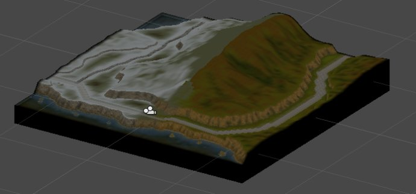

Zili Wang
This is the term project of my virtual reality class. The class was taught by Prof. Robert V. Kenyon in Electronic Visualization Laboratory.
To express my love of the Emil Chronicle Online (A MMORPG with very cute artistic style), I devoted myself into studying the 3D model structure of the game resources. I thought this was also the most effective way to obtain in-depth understanding of various geometry and rending techniques, such as skeleton animation, cartoon shader and so on. And then, I imported the scene into a VR system, by doing so I could better immerse myself in the game scene. This work also allowed me to have a great understanding about various VR techniques.
The final scene shown in Unity3D
I extracted the model data from the raw game files. Model data included mesh, texture, animation, skeleton and terrain. The decoding work was merely based on a very rough documents that made by fans of ECO. I developed all the algorithms and made a tool of extraction.
I converted the model data to fbx format using FBX SDK, since fbx format was one of the formats the game engine Unity3d supported. I did so because I wanted to import the model into a powerful game engine so that I could further manipulate these models.
Using the models I extracted from the game resources, I reconstructed the game scene in Unity3D, showed the scene on a stereoscopic screen and controlled the avatar by my own hand movements. This way of control is based on infrared tracking technique, and first person control method is employed to navigation the scene. By grabbing a sensor in my hand, I will go ahead into the scene when I stretch my hand in front of me and turn right or left respectively when I stretch my hand to my right or left side.

I extracted and imported the game terrain and showed one of them in Unity3D
The decoding work, format converting work and importing work really involved many details about computer graphic, like index buffer, quaternion, matrix operation, skinning and so on. It seemed as an impossible task at first, but I checked a lot of materials, made great efforts to understand the concepts and coded many utilities to handle these details. Finally, I combined all the detailed work and made the entire system.
The visuals of skeleton of monster in game, shown in 3DS Max
The visuals of skin of monster in game, shown in 3DS Max. In fact I firstly imported the fbx to 3ds Max and modified the model and then exported fbx format again.